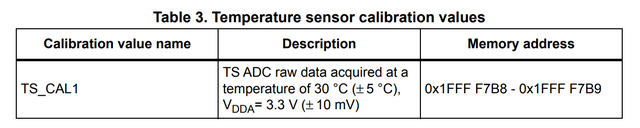

The STM32F030 family has a suffix 6 (STM32F030F4P6) for the ambient operating temperature: -40℃ to 85℃. It should be fine to use not only inside rooms but also outdoor (may be not on the dashboard of a car parked under direct tropical sunlight at noon in summer).
The initialization steps:
static void adc_init( void) {
/* Enable ADC peripheral */
RCC_APB2ENR |= RCC_APB2ENR_ADCEN ;
/* Setup ADC sampling clock */
#ifdef HSI14
RCC_CR2 |= RCC_CR2_HSI14ON ; /* Start HSI14 clock */
do {} while( !( RCC_CR2 & RCC_CR2_HSI14RDY)) ; /* Wait for stable clock */
/* Select HSI14 as sampling clock for ADC */
// ADC_CFGR2 &= ~ADC_CFGR2_CKMODE ; /* Default 00 == HSI14 */
#else
/* Select PCLK/2 as sampling clock for ADC */
ADC_CFGR2 |= ADC_CFGR2_PCLK2 ; /* 01 PCLK/2 Over default 00 */
// ADC_CFGR2 |= ADC_CFGR2_PCLK4 ; /* 10 PCLK/4 Over default 00 */
#endif
/* Calibration */
ADC_CR |= ADC_CR_ADCAL ;
do {} while( ADC_CR & ADC_CR_ADCAL) ; /* Wait end of calibration */
/* Enable Command (below Work Around from Errata necessary with PCLK/4) */
do {
ADC_CR |= ADC_CR_ADEN ;
} while( !( ADC_ISR & ADC_ISR_ADRDY)) ;
/* Select inputs and precision */
ADC_CHSELR = 3 << 16 ; /* Channel 16: temperature, Channel 17: Vrefint */
ADC_CCR |= ADC_CCR_TSEN | ADC_CCR_VREFEN ;
ADC_SMPR = 7 ;
/* Select acquisition direction and mode */
/* Default scan direction (00) is Temperature before Voltage */
// ADC_CFGR1 &= ~ADC_CFGR1_SCANDIR ; /* Default 0 is low to high */
ADC_CFGR1 |= ADC_CFGR1_DISCEN ; /* Enable Discontinuous mode */
}
The ADC characteristics in the STM32F030 datasheet states that the
maximum ADC sampling clock is 14MHz. It is possible to select either an
internal 14 MHz clock (HSI14) or PCLK divided by 2 or 4. I want to check
how the clock affects the readings (HSI14, 28/2, 24/2, 48/4). At first I
couldn’t manage to make PCLK/4 work until I found the note on ADC
calibration work around in the errata
ES0219 2.5.3
After this initialization, I can trigger an ADC conversion by issuing a command, wait until completion and fetch the result in the ADC Data Register.
static unsigned adc_convert( void) {
/* Either only one channel in sequence or Discontinuous mode ON */
ADC_CR |= ADC_CR_ADSTART ; /* Start ADC conversion */
do {} while( ADC_CR & ADC_CR_ADSTART) ; /* Wait for start command cleared */
return ADC_DR ;
}
There is two values to fetch, temperature and voltage in that order.
temperature = adc_convert() ; voltage = adc_convert() ;The values resulting from an ADC conversion are raw, at the precision I selected during initialization (12 bits) it gives me a value between 0 and 4095.
Vmeasured = VDDA * VRAW / 4095
This is why I measure both voltage and temperature. Ideally, VDDA should be 3.3V, in practice it’s highly dependent of the power supply.
Every chip is calibrated in factory during production, ADC conversion is done at 3.3V and 30℃ and the resulting values are stored in system memory.

/* STM32F030 calibration addresses (at 3.3V and 30C) */ #define TS_CAL1 ((unsigned short *) 0x1FFFF7B8) #define VREFINT_CAL ((unsigned short *) 0x1FFFF7BA)VREFINT is the embedded reference voltage measured on channel 17 of the ADC. According to the STM32F030 datasheet it is in the range 1.2V to 1.25V. I have a chip whose VREFINT calibration value is 1526, that means the embedded reference voltage VREFINT is 3.3 * 1526 / 4095, close to the middle of the range and the given typical value of 1.23V.
I can read VREFINT raw data after ADC conversion and I know its factory calibrated value, so I can calculate VDDA.
VREFINT = 3.3 * VCAL / 4095 = VDDA * VRAW / 4095
VDDA = 3.3 * VCAL / VRAW
On my chip whose VCAL is 1526, if I measure VRAW at 1534, this will put VDDA at 3.28V. Less than 1% off the ideal 3.3V voltage.
There is only one temperature calibration value stored for STM32F030 chips. You need two reference values to be able to calculate the temperature reliably, either the ADC readings taken at two temperatures (30℃ and 110℃ for other STM32 families) or one ADC reading plus the value of the temperature slope characteristic for that particular chip.
The STM32F030 datasheet gives the range 4~4.6 mV/℃ and a typical value of 4.3 mV/℃ for the average slope. The reference manual uses 4.3 mV/℃ in the temperature calculation code example.
When it comes to temperature measurement using the temperature sensor of STM32F030, you need to do your own two point calibration.
typedef enum {
VNT_INIT,
VNT_CAL,
VNT_RAW,
VNT_VNC
} vnt_cmd_t ;
void adc_vnt( vnt_cmd_t cmd, short *ptrV, short *ptrC) ;
The voltage return value is in centiV (330 == 3.3V), the temperature
return value is in deci℃ (300 == 30℃).
I make a copy of gpioa.c into adc.c adding the code I just
explained for adc_init(), adc_convert(), the
calibration value addresses and the following implementation of
adc_vnt().
void adc_vnt( vnt_cmd_t cmd, short *ptrV, short *ptrC) {
if( cmd == VNT_INIT)
adc_init() ;
if( cmd <= VNT_CAL) {
/* Calibration Values */
*ptrV = *VREFINT_CAL ;
*ptrC = *TS_CAL1 ;
return ;
}
/* ADC Conversion */
*ptrC = adc_convert() ;
*ptrV = adc_convert() ;
if( cmd == VNT_VNC) {
*ptrC = 300 + (*TS_CAL1 - *ptrC * *VREFINT_CAL / *ptrV) * 10000 / 5336 ;
*ptrV = 330 * *VREFINT_CAL / *ptrV ;
}
}
The calculation for the temperature is based on the code example from
the reference manual (RM0360 A.7.16).
The only thing missing is the description of the newly used registers and bitfields.
● The extra RCC bitfields and register for enabling the ADC peripheral and activating HSI14 clock.
#define RCC_APB2ENR_ADCEN 0x00000200 /* 9: ADC clock enable */ #define RCC_CR2 RCC[ 13] #define RCC_CR2_HSI14ON 0x00000001 /* 1: HSI14 clock enable */ #define RCC_CR2_HSI14RDY 0x00000002 /* 2: HSI14 clock ready */● The ADC registers and bitfields.
#define ADC ((volatile long *) 0x40012400)
#define ADC_ISR ADC[ 0]
#define ADC_ISR_ADRDY 1 /* 0: ADC Ready */
#define ADC_ISR_EOC 4 /* 2: End Of Conversion flag */
#define ADC_CR ADC[ 2]
#define ADC_CR_ADEN 1 /* 0: ADc ENable command */
#define ADC_CR_ADSTART 4 /* 2: ADC Start Conversion command */
#define ADC_CR_ADCAL (1 << 31) /* 31: ADC Start Calibration cmd */
#define ADC_CFGR1 ADC[ 3] /* Configuration Register 1 */
#define ADC_CFGR1_SCANDIR 4 /* 2: Scan sequence direction */
#define ADC_CFGR1_DISCEN (1 << 16) /* 16: Enable Discontinuous mode */
#define ADC_CFGR2 ADC[ 4] /* Configuration Register 2 */
#define ADC_CFGR2_CKMODE (3 << 30) /* 31-30: Clock Mode Mask */
/* 31-30: Default 00 HSI14 */
#define ADC_CFGR2_PCLK2 (1 << 30) /* 31-30: PCLK/2 */
#define ADC_CFGR2_PCLK4 (2 << 30) /* 31-30: PCLK/4 */
#define ADC_SMPR ADC[ 5] /* Sampling Time Register */
#define ADC_CHSELR ADC[ 10] /* Channel Selection Register */
#define ADC_DR ADC[ 16] /* Data Register */
#define ADC_CCR ADC[ 194] /* Common Configuration Register */
#define ADC_CCR_VREFEN (1 << 22) /* 22: Vrefint Enable */
#define ADC_CCR_TSEN (1 << 23) /* 23: Temperature Sensor Enable */
/* adcmain.c -- ADC reading of reference voltage and temperature sensor */
#include <stdio.h>
#include "system.h"
#define RAW
int main( void) {
unsigned last = 0 ;
short calV, calC ;
/* Initialize ADC and fetch calibration values */
adc_vnt( VNT_INIT, &calV, &calC) ;
#ifdef RAW
printf( "%u, %u\n", calV, calC) ;
#endif
for( ;;)
if( uptime == last)
yield() ;
else {
short Vsample, Csample ;
last = uptime ;
#ifdef RAW
adc_vnt( VNT_RAW, &Vsample, &Csample) ;
printf( "%i, %i, %i, %i, ", calV, Vsample, calC, Csample) ;
Csample = 300 + (calC - (int) Csample * calV / Vsample)
* 10000 / 5336 ;
Vsample = 330 * calV / Vsample ;
#else
adc_vnt( VNT_VNC, &Vsample, &Csample) ;
#endif
printf( "%i.%i, %i.%i\n", Vsample / 100, Vsample % 100,
Csample / 10, Csample % 10) ;
}
}
/* No quartz, configure PLL at 28MHz */ //#define HSE 8000000 #define PLL 7 #define BAUD 9600 //#define HSI14 1I add the composition in Makefile
SRCS = startup.txeie.c adc.c adcmain.cThe build gives some warning as 28MHz is not a perfect match for a baudrate of 9600 and the current implementation of
usleep(). This
will not affect my application.
$ make
adc.c:155:3: warning: #warning baud rate not accurate at that clock frequency [-
Wcpp]
155 | # warning baud rate not accurate at that clock frequency
| ^~~~~~~
adc.c: In function 'usleep':
adc.c:232:3: warning: #warning HCLK is not multiple of 8 MHz [-Wcpp]
232 | # warning HCLK is not multiple of 8 MHz
| ^~~~~~~
f030f4.elf from startup.txeie.o adc.o adcmain.o
text data bss dec hex filename
2408 0 16 2424 978 f030f4.elf
f030f4.hex
f030f4.bin
Flashing the board and starting execution, I can see the results of the
ADC conversion and the calculated values.
The temperature readings are roughly 5℃ higher than room temperature.
Using the factory calibration data I can convert the raw ADC measurement into actual Vref. This will help in adjusting the ADC readings. But for temperature, the provided calibration is insufficient, there is only one point measured in factory for the STM32F030 family members.
Next, I will do temperature calibration, which means taking two measurements as far apart as possible in the working range I want to use.